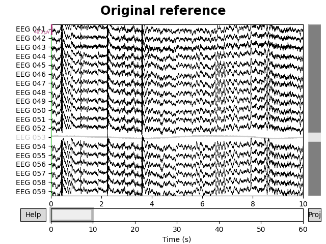
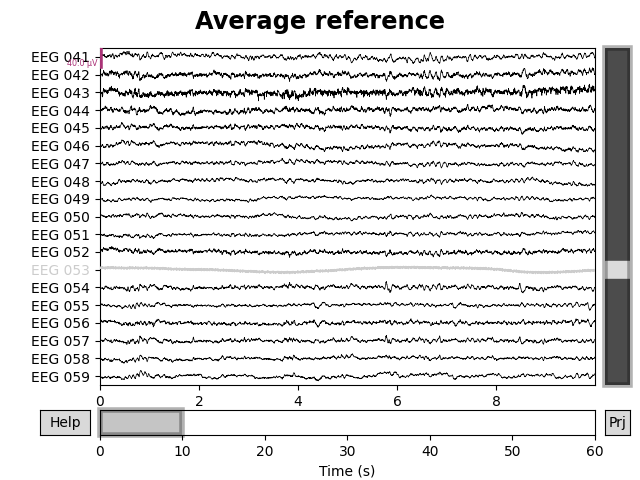

Note
Click here to download the full example code
Setting the EEG reference¶
This tutorial describes how to set or change the EEG reference in MNE-Python.
Page contents
As usual we’ll start by importing the modules we need, loading some example data, and cropping it to save memory. Since this tutorial deals specifically with EEG, we’ll also restrict the dataset to just a few EEG channels so the plots are easier to see:
import os
import mne
sample_data_folder = mne.datasets.sample.data_path()
sample_data_raw_file = os.path.join(sample_data_folder, 'MEG', 'sample',
'sample_audvis_raw.fif')
raw = mne.io.read_raw_fif(sample_data_raw_file, verbose=False)
raw.crop(tmax=60).load_data()
raw.pick(['EEG 0{:02}'.format(n) for n in range(41, 60)])
Background¶
EEG measures a voltage (difference in electric potential) between each electrode and a reference electrode. This means that whatever signal is present at the reference electrode is effectively subtracted from all the measurement electrodes. Therefore, an ideal reference signal is one that captures none of the brain-specific fluctuations in electric potential, while capturing all of the environmental noise/interference that is being picked up by the measurement electrodes.
In practice, this means that the reference electrode is often placed in a location on the subject’s body and close to their head (so that any environmental interference affects the reference and measurement electrodes similarly) but as far away from the neural sources as possible (so that the reference signal doesn’t pick up brain-based fluctuations). Typical reference locations are the subject’s earlobe, nose, mastoid process, or collarbone. Each of these has advantages and disadvantages regarding how much brain signal it picks up (e.g., the mastoids pick up a fair amount compared to the others), and regarding the environmental noise it picks up (e.g., earlobe electrodes may shift easily, and have signals more similar to electrodes on the same side of the head).
Even in cases where no electrode is specifically designated as the reference, EEG recording hardware will still treat one of the scalp electrodes as the reference, and the recording software may or may not display it to you (it might appear as a completely flat channel, or the software might subtract out the average of all signals before displaying, making it look like there is no reference).
Setting or changing the reference channel¶
If you want to recompute your data with a different reference than was used
when the raw data were recorded and/or saved, MNE-Python provides the
set_eeg_reference() method on Raw objects
as well as the mne.add_reference_channels() function. To use an
existing channel as the new reference, use the
set_eeg_reference() method; you can also designate multiple
existing electrodes as reference channels, as is sometimes done with mastoid
references:
# code lines below are commented out because the sample data doesn't have
# earlobe or mastoid channels, so this is just for demonstration purposes:
# use a single channel reference (left earlobe)
# raw.set_eeg_reference(ref_channels=['A1'])
# use average of mastoid channels as reference
# raw.set_eeg_reference(ref_channels=['M1', 'M2'])
If a scalp electrode was used as reference but was not saved alongside the
raw data (reference channels often aren’t), you may wish to add it back to
the dataset before re-referencing. For example, if your EEG system recorded
with channel Fp1 as the reference but did not include Fp1 in the data
file, using set_eeg_reference() to set (say) Cz as the
new reference will then subtract out the signal at Cz without restoring
the signal at Fp1. In this situation, you can add back Fp1 as a flat
channel prior to re-referencing using add_reference_channels().
(Since our example data doesn’t use the 10-20 electrode naming system, the
example below adds EEG 999 as the missing reference, then sets the
reference to EEG 050.) Here’s how the data looks in its original state:
raw.plot()
By default, add_reference_channels() returns a copy, so we can go
back to our original raw object later. If you wanted to alter the
existing Raw object in-place you could specify
copy=False.
# add new reference channel (all zero)
raw_new_ref = mne.add_reference_channels(raw, ref_channels=['EEG 999'])
raw_new_ref.plot()
Out:
EEG channel type selected for re-referencing
Applying a custom EEG reference.
# set reference to `EEG 050`
raw_new_ref.set_eeg_reference(ref_channels=['EEG 050'])
raw_new_ref.plot()
Notice that the new reference (EEG 050) is now flat, while the original
reference channel that we added back to the data (EEG 999) has a non-zero
signal. Notice also that EEG 053 (which is marked as “bad” in
raw.info['bads']) is not affected by the re-referencing.
Setting average reference¶
To set a “virtual reference” that is the average of all channels, you can use
set_eeg_reference() with ref_channels='average'. Just
as above, this will not affect any channels marked as “bad”, nor will it
include bad channels when computing the average. However, it does modify the
Raw object in-place, so we’ll make a copy first so we can
still go back to the unmodified Raw object later:
# use the average of all channels as reference
raw_avg_ref = raw.copy().set_eeg_reference(ref_channels='average')
raw_avg_ref.plot()
Creating the average reference as a projector¶
If using an average reference, it is possible to create the reference as a
projector rather than subtracting the reference from the data
immediately by specifying projection=True:
raw.set_eeg_reference('average', projection=True)
print(raw.info['projs'])
Out:
[<Projection | PCA-v1, active : False, n_channels : 102>, <Projection | PCA-v2, active : False, n_channels : 102>, <Projection | PCA-v3, active : False, n_channels : 102>, <Projection | Average EEG reference, active : False, n_channels : 18>]
Creating the average reference as a projector has a few advantages:
It is possible to turn projectors on or off when plotting, so it is easy to visualize the effect that the average reference has on the data.
If additional channels are marked as “bad” or if a subset of channels are later selected, the projector will be re-computed to take these changes into account (thus guaranteeing that the signal is zero-mean).
If there are other unapplied projectors affecting the EEG channels (such as SSP projectors for removing heartbeat or blink artifacts), EEG re-referencing cannot be performed until those projectors are either applied or removed; adding the EEG reference as a projector is not subject to that constraint. (The reason this wasn’t a problem when we applied the non-projector average reference to
raw_avg_refabove is that the empty-room projectors included in the sample data.fiffile were only computed for the magnetometers.)
for title, proj in zip(['Original', 'Average'], [False, True]):
fig = raw.plot(proj=proj, n_channels=len(raw))
# make room for title
fig.subplots_adjust(top=0.9)
fig.suptitle('{} reference'.format(title), size='xx-large', weight='bold')
- 
- 
EEG reference and source modeling¶
If you plan to perform source modeling (either with EEG or combined EEG/MEG data), it is strongly recommended to use the average-reference-as-projection approach. It is important to use an average reference because using a specific reference sensor (or even an average of a few sensors) spreads the forward model error from the reference sensor(s) into all sensors, effectively amplifying the importance of the reference sensor(s) when computing source estimates. In contrast, using the average of all EEG channels as reference spreads the forward modeling error evenly across channels, so no one channel is weighted more strongly during source estimation. See also this FieldTrip FAQ on average referencing for more information.
The main reason for specifying the average reference as a projector was mentioned in the previous section: an average reference projector adapts if channels are dropped, ensuring that the signal will always be zero-mean when the source modeling is performed. In contrast, applying an average reference by the traditional subtraction method offers no such guarantee.
For these reasons, when performing inverse imaging, MNE-Python will raise a ``ValueError`` if there are EEG channels present and something other than an average reference strategy has been specified.
Total running time of the script: ( 0 minutes 9.155 seconds)
Estimated memory usage: 111 MB